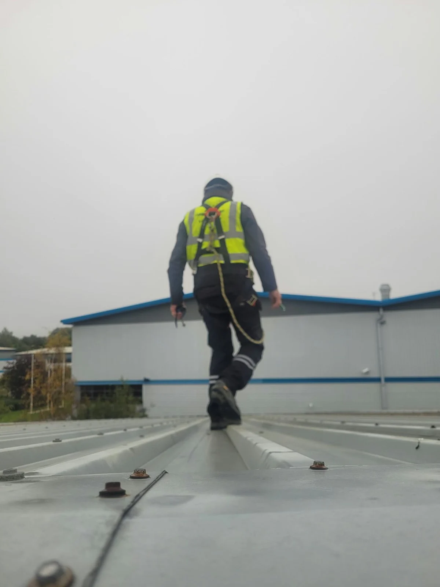
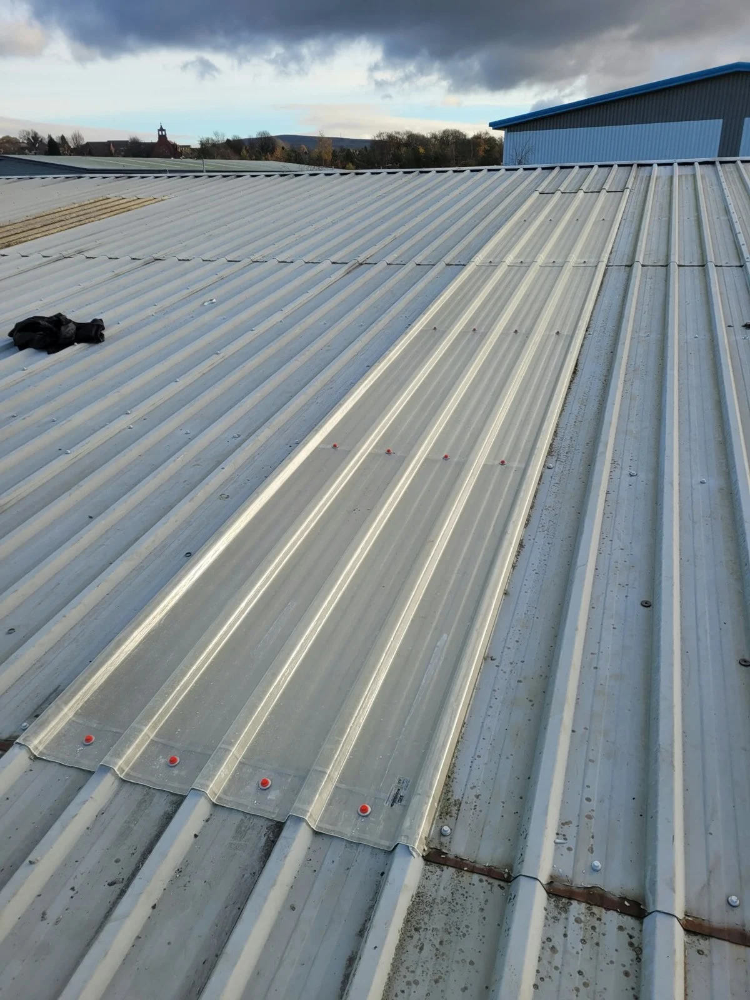

Understand the roof
Tell us about the roof’s use, approximate size and condition. Drawings or photographs can help establish what needs to be assessed.

Specialist services
Flat roofing installation with attention to upstands, junctions and drainage details.
Single-ply roofing
Single-ply flat roofing is part of our roofing installation service. The main roof surface is only one part of the job: edges, upstands, penetrations and rainwater details all need to be considered within the agreed specification. We can discuss new roofing work and existing flat roofs that require refurbishment or attention.
What to consider
Tell us about the roof’s use, approximate size and condition. Drawings or photographs can help establish what needs to be assessed.
The perimeter, changes in level and penetrations need an installation approach suited to the specified system.
A new installation, local repair and wider refurbishment require different scopes. We will discuss the work needed before an installation is agreed.
Useful information
Yes. Send an overview and close-up photographs of any problem areas, taken from a safe position. Do not access a roof to take photographs.
Contact us with the roof details and the issue you are experiencing. We can discuss inspection, repair or refurbishment options.
Related expertise

Give an existing building a new exterior with roof replacement, re-cladding and associated finishing work.
Explore the service
Targeted attention for roof defects, gutter issues, flashings and rainwater goods.
Explore the service
Inspections, drone surveys and planned maintenance to understand your roof and exterior.
Explore the serviceSend the site location, a short brief and any photographs or drawings. We’ll help you take the next step.